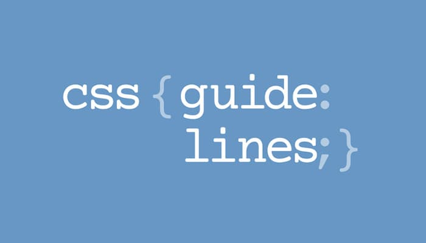
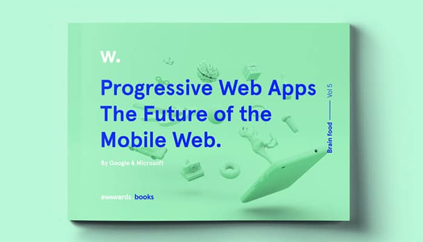
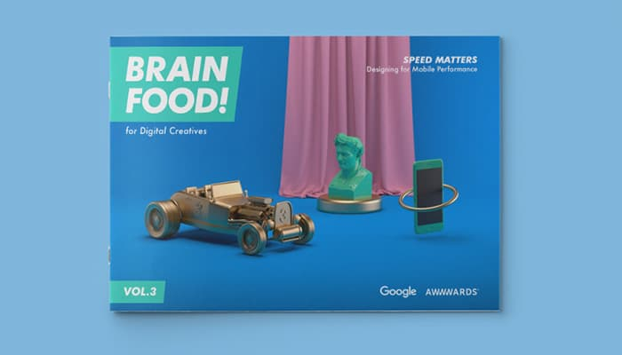
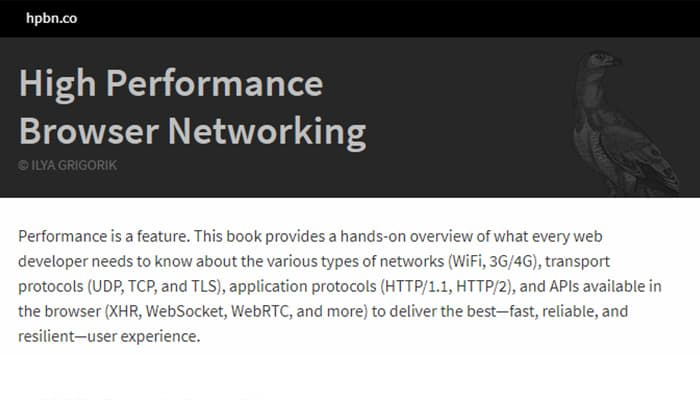

Here is some resourses they may be helpful for you.

Css Guidelin
High-level advice and guidelines for writing sane, manageable, scalable CSS
By - Harry Roberts

Progressive Web Apps
This e-book explores today’s mobile web experiences and why PWAs provide revolutionary solutions to improving UX on the mobile web.
By - awwwards.com

Brain Food Perceived Performance
In this eBook you get data discovered in Google’s latest study and reveal valuable TIPS for designers and developers to optimise mobile performance.
By - awwwards.com

High Performance Browser Networking
This book is required reading for anyone who cares about web performance; it's already established as the go-to reference on the topic.
By - Ilya Grigorik